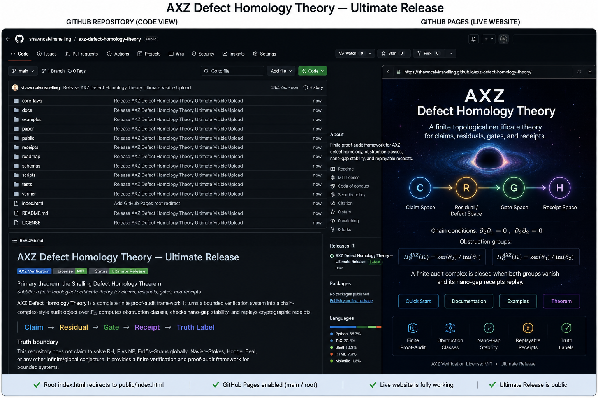

A finite topological certificate theory for claims, residuals, gates, and receipts.
The Snelling Defect Homology Theorem turns a bounded verification system into a chain-complex-style audit object over F₂.
C --∂1--> R --∂2--> G --∂3--> H Chain conditions: ∂2∂1 = 0 ∂3∂2 = 0 Obstruction groups: H_R^AXZ(K) = ker(∂2) / im(∂1) H_G^AXZ(K) = ker(∂3) / im(∂2)
A finite audit complex is closed when both obstruction groups vanish and its nano-gap receipts replay.
python verifier/defect_homology.py examples/full_closed_chain.json python verifier/nano_gap_stability.py examples/full_closed_chain.json bash RUN_ALL.sh
This package includes a root index.html, so GitHub Pages can open directly from main / root.

This project does not claim to solve RH, P vs NP, Erdős–Straus globally, Navier–Stokes, Hodge, Beal, or any other infinite/global conjecture.
It provides a finite verification and proof-audit framework for bounded systems.
Idea → invariant → residual → defect → gate → certificate → receipt → truth label